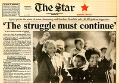

Mandela born un Mvezo in the Transkei
Mandela Mandela arrives in Johannesburg
Moves to Orlando East then Orlando West

Forced removal of black people from Sophiatown
Co - founded Umkonto we Sizwe (Spear of the Nation) the armed wing of the ANC
Commences tentative talks with the ruling Nationalist Government representatives
Nelson Mandela meets with newly elected President F W De Klerk on 12th December
President De Klerk announce the release of Nelson Mandela and other political prisoners
In July 1991 the ANC holds its first annual conference inside South Africa in 30 Years and Nelson Mandela is elected unopposed
On 20th December CODESA (Convention for a Democratic South Africa) starts to negotiate the future of South Africa at the World Trade Centre
On 13th April Nelson Mandela announces his separation form Winnie after officially opening the Rolihlahla Primary School in Etwatwa
The date of the first universal general election is set for 27th April 1994 and awarded the Nobel Peace Prize jointly with Pres. F W De Klerk
"Do not judge me by my success, judge me by how many times I've fallen down and got back up again"
- Nelson Mandela Legacy